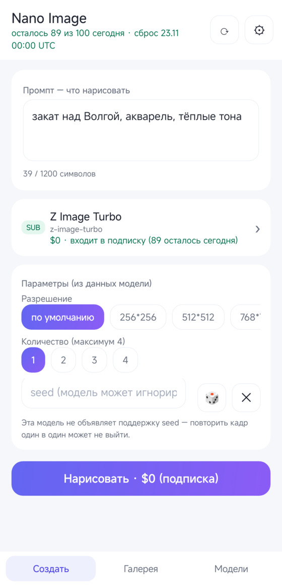
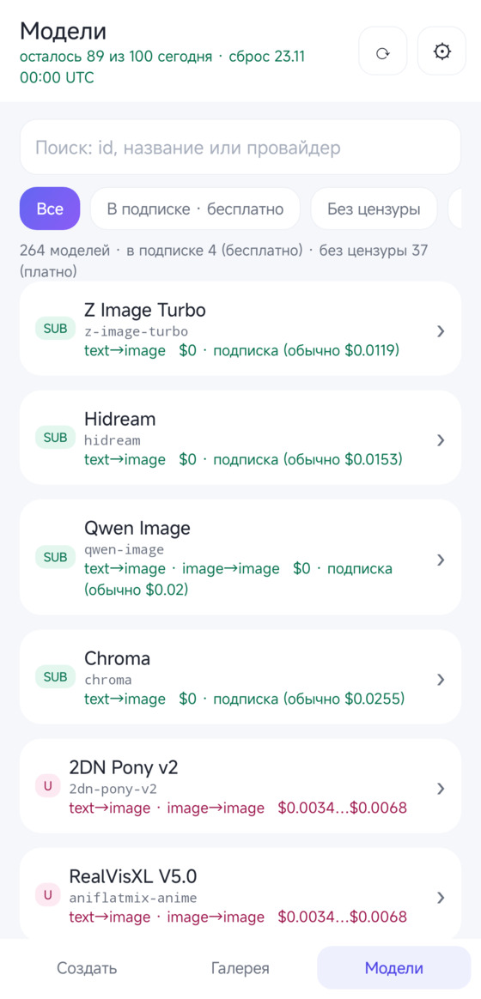
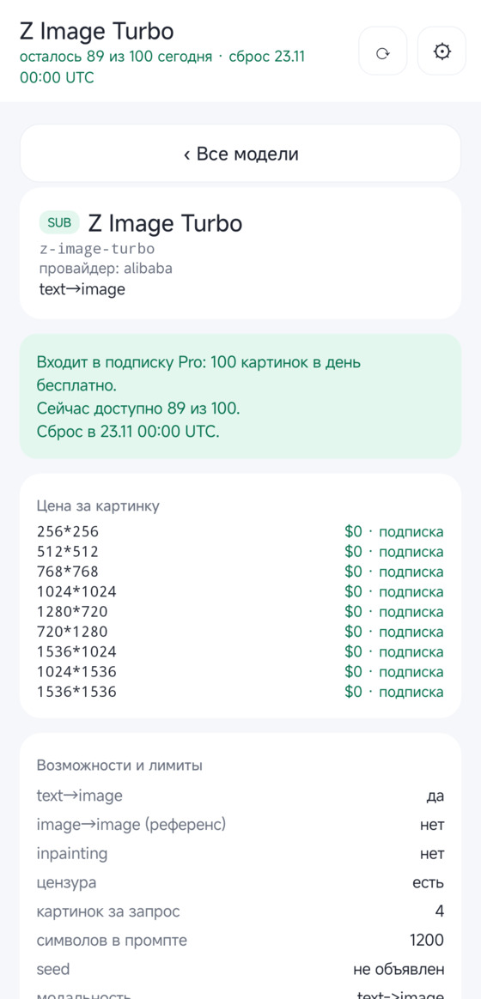
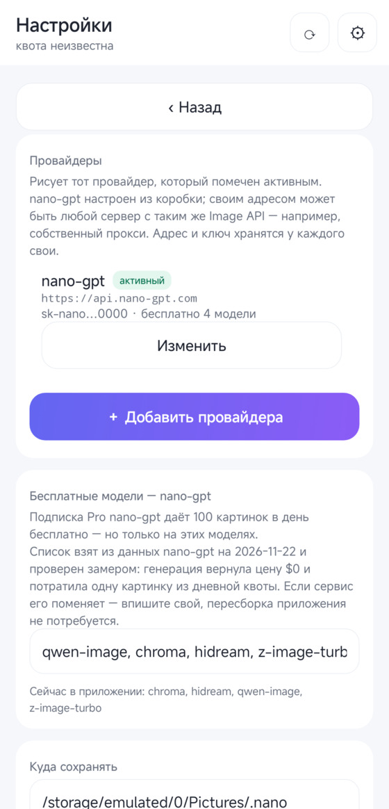

Генерация картинок по промпту прямо с телефона —
с ценами, подпиской и цензурой как на ладони
Android-клиент Image API nano-gpt.com и любого совместимого провайдера. Бесплатные модели подписки, почём каждая платная и что именно спишется — приложение показывает до нажатия кнопки, а фактическую цену запроса — после.
Открытый исходный код · GPL-3.0 · без Gradle и androidx · ключи не покидают устройство
На кнопке генерации, в списке и в карточке модели. После запроса показывается фактическая цена из API: подписка вернула $0 или деньги списались с баланса.
Остаток дневной квоты и время сброса — в шапке приложения. Четыре модели подписки рисуют бесплатно, пока квота не кончилась.
Бейдж U — модель без цензуры (платно всегда), C — с цензурой, SUB — покрыта подпиской. Фильтры по всем трём признакам и поиск по каталогу из 264 моделей.
Всё, что спишет деньги, спрашивает подтверждение диалогом с суммой. Бесплатная генерация по подписке идёт без лишних вопросов.
Адрес и ключ задаются в настройках, провайдеров может быть несколько. Каталог, цены, подписочные модели и кэш у каждого свои.
Модели с поддержкой референса принимают ваши фото: лимиты и разрешения берутся из данных модели, а не выдумываются.
Результаты — в скрытую папку Pictures/.nano с маркером .nomedia, рядом .json с промптом и фактической ценой. Просмотр с pinch-zoom и «Поделиться».
Ключи живут только в приватном каталоге приложения, трафик только HTTPS, никакой аналитики и сторонних SDK.
Подписка Pro nano-gpt покрывает четыре модели — на них дневная квота 100 картинок. Остальные списывают деньги с баланса, и приложение всегда говорит, сколько.
| Модель | Обычная цена | С подпиской |
|---|---|---|
z-image-turbo | от $0.0119 | $0 · 100/день |
hidream | от $0.0153 | $0 · 100/день |
qwen-image | от $0.02 | $0 · 100/день · image-to-image |
chroma | от $0.0255 | $0 · 100/день |
Ещё 37 моделей каталога — без цензуры (бейдж U): в подписку они не входят никогда. Когда дневная квота кончилась, приложение предложит платный проход, но только после подтверждения с суммой.




Приложение говорит на Image API в формате nano-gpt. Если у вас собственный
прокси или совместимый сервер — добавьте его в настройках: название, адрес, ключ
и список бесплатных моделей. Хвост /api/v1 в адресе можно не убирать.
GET /api/v1/images/models каталог моделей с прайсом
POST /api/v1/images генерация (base64 в ответе)
GET /api/subscription/v1/usage дневная квота (может отсутствовать)
GET /api/v1/usage/requests/{id} фактическая цена запроса
Если провайдер не отдаёт квоту — все его модели считаются платными, и каждая генерация подтверждается отдельно.
Готовый APK — в релизах. Собрать самому можно в Termux, без Gradle и Android Studio:
pkg install aapt2 apksigner kotlin javac zip git clone https://github.com/gotical/nano-image.git cd nano-image && ./build.sh # -> nanoimage.apk pm install -r nanoimage.apk # adb или root
Исходники — чистый Kotlin без androidx: разметка рисуется программно, JSON разбирает собственный мини-парсер. Android 8.0 и новее.